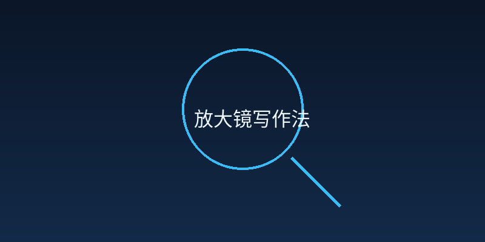
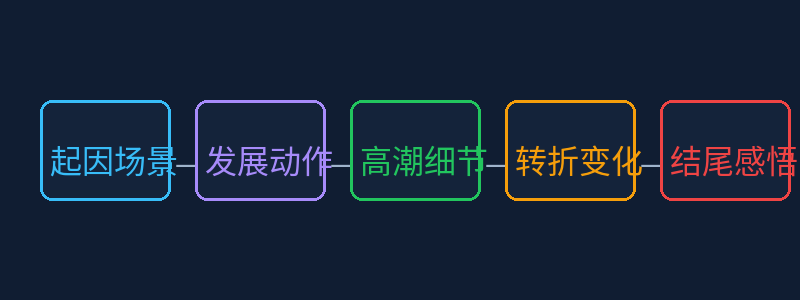
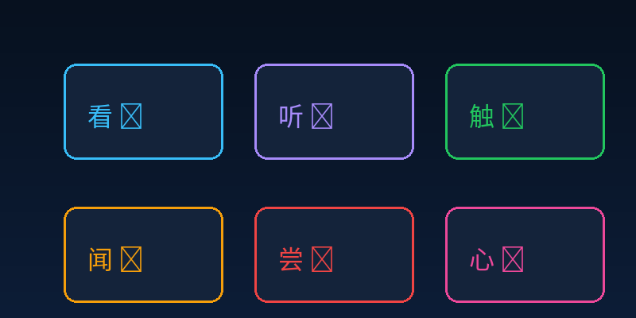

Gallery
v0.1.0 · skill v7.14.0
你已经能写完整的句子和段落，也经历过很多有趣的事情。可是每次写作文就觉得"没什么好写的"，挤不出内容。今天我们要学会"放大镜写作法"——把一件小事拆成5个镜头，每个镜头写出画面感，轻松写出500字。

用放大镜去看一件小事，把每个瞬间都写成像电影画面一样精彩
先选一个你关心的问题。后面的例子、提示和AI学伴都会围绕这个问题来帮你推进。
选择或输入后，本课会围绕你的问题展开。
你已经能写完整的句子和段落，也经历过很多有趣的事情。
可是每次写作文就觉得"没什么好写的"，挤不出内容，对着白纸发呆。
今天我们要学会"放大镜写作法"——把一件小事拆成5个镜头，每个镜头写出画面感，轻松写出500字！
想象你有一把放大镜，把一件看似普通的小事"放大"来看——你会发现每一个瞬间都有画面、有声音、有心情。
同一件事，"流水账"和"5镜头法"写出来差别有多大？下面是完整的示范：
今天课间，我跑步的时候摔了一跤，膝盖破了，很疼，同学扶我去了医务室，后来就好了。
才40多个字，没有任何画面感，读者看了不会有任何感受。
下课铃一响，我像一颗出膛的子弹冲出教室。走廊里挤满了人，空气里弥漫着粉笔灰的味道，地面被踩得锃亮。我和小明约好了比赛跑步，看谁先到操场。
包含：听觉（铃声）、嗅觉（粉笔灰）、视觉（锃亮的地面）
"预备——跑！"小明一声令下，我使出全力往前冲。风灌进耳朵里，呼呼作响。拐弯的时候，我看见前面有个低年级的小同学突然停下来系鞋带。
包含：听觉（呼呼风声、令声）、视觉（系鞋带的小同学）
"小心——"还没等我反应过来，脚下一滑，整个人像断了线的风筝一样飞了出去。膝盖重重地磕在水磨石地面上，"砰"的一声闷响，钻心的疼瞬间涌上来。我低头一看，裤子上渗出了血丝，像一朵暗红色的小花慢慢绽开。
包含：触觉（钻心的疼）、视觉（血丝像花绽开）、听觉（闷响）、比喻（断了线的风筝）
眼泪在眼眶里打转，我拼命忍住不哭——毕竟是个"男子汉"。这时，一双手伸到了我面前，是小明。他蹲下来，皱着眉头看了看我的伤口，从口袋里掏出一张纸巾，轻轻按在膝盖上。"走，去医务室。"他的声音不大，但让我觉得很安心。
包含：心理（忍住不哭）、触觉（纸巾按在膝盖上）、视觉（皱着眉头）、情感变化（害怕→安心）
校医阿姨给我消了毒，贴上了创可贴。走出医务室，阳光照在走廊的地面上，暖洋洋的。虽然膝盖还隐隐作痛，但小明递来的那张纸巾，比创可贴还管用。那一刻我明白：摔倒不可怕，可怕的是没有人扶你起来。
包含：触觉（暖洋洋的阳光、隐隐作痛）、心理（感悟道理）、感官对比（疼痛 vs 温暖）
下面三段文字都写的是"放学下雨"这件事，请选出你认为写得最具体的一段。
作文不是写惊天动地的大事，而是把你身边的小事写细。下面这些场景，哪个是你经历过的？
你选择了 "" 作为写作素材，试试下面的灵感触发器：
任何一件事都可以拆成5个镜头，就像拍电影一样，每个镜头拍一个画面：

下面两段写的是同一件事——"去公园玩"。对比看看，哪段更吸引你？
我看到了花。然后我回家了。今天真开心。
总共才30多个字，干巴巴的，像在报流水账。
起因周末早上，阳光透过窗帘缝隙洒进来，妈妈说"今天去公园吧！"我一蹦三尺高。
发展到了公园，我直奔游乐场，排队等了10分钟才坐上旋转木马。
高潮轮到我时，木马突然加速旋转，风灌进嘴里，我忍不住大叫"太刺激了！"
转折刚下来就发现冰淇淋化了，黏了一手，但我反而笑出了声。
感悟虽然冰淇淋没吃成，但那3分钟的旋转让我记住了——快乐不需要完美。
用了5个镜头，有画面、有声音、有心情！
下面的镜头卡片顺序被打乱了，拖拽（或点击箭头）把它们排成正确的顺序。
"具体"就是让读者看到画面、听到声音、感受到温度。用好你的七种感官：

原句："秋天来了，树叶黄了。" 点击下面的感官按钮，看看能怎么改写：
现在轮到你了！用至少3种感官，把"秋天来了，树叶黄了"改写得更有画面感：
5张卡片写好了，怎么变成一篇完整的作文？下面是支架写作框，帮你一步步完成。
这件事是在什么时间、什么地方发生的？当时周围的环境是怎样的？
接下来发生了什么？你（或主角）做了什么？
最让人紧张/兴奋/感动的瞬间是什么？当时你的心跳、表情、动作是什么？
事情有什么意想不到的变化？你的心情发生了什么转变？
事情结束后，你最大的收获或感受是什么？
写完后对照下面的清单检查，看看有没有遗漏：
用今天学到的"放大镜写作法"，独立写一篇500字记事作文"难忘的一天"。